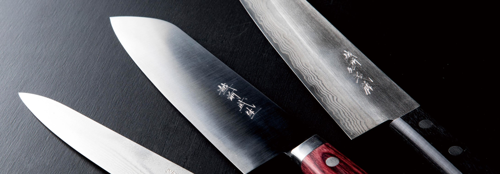
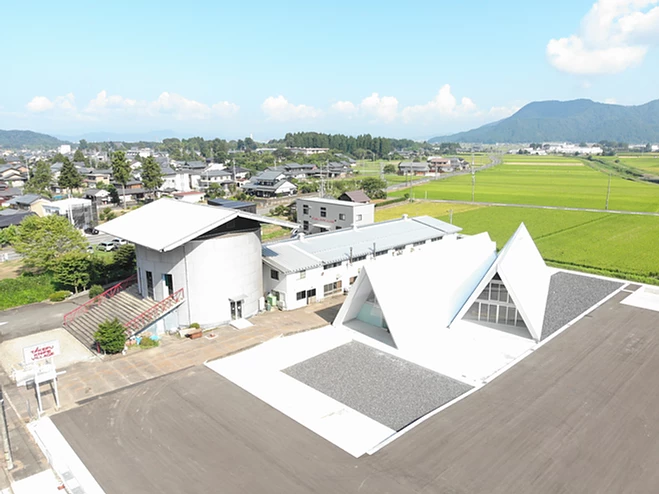

う ： 打刃物 磨き抜かれた 伝統と技
一言でいうと？
独特の技法が光る越前代表の伝統工芸品

越前市で作られている金工品(包丁や鎌など)のことをいいます。
薄くて軽い刃が特徴で、昔ながらの手仕上げにこだわる匠の技によるものです。
昭和54年に刃物としては初の伝統工芸品の指定を受けました。（全体では105番目）
歴史は？
700年の伝統の技
1337年(南北朝時代)京都の刀匠(とうしょう)・千代鶴国安が、刀剣制作に適した地を求め府中(今の越前市)を訪れた時に、近くに住む農民のために鎌を作ったことから始まったといわれています。
江戸時代には福井藩の保護を受け、鍛冶株仲間が結成されたり、越前の鎌を愛用していた漆かき職人が漆を求めて全国を回っている時に、打刃物を売りまわって注文を持ち帰ったことから、全国で使われるようになりました。
もっとよく知るには？
タケフナイフビレッジ

1993年に建てられたタケフナイフビレッジ協同組合の拠点、共同工房、直売所です。
工場見学や研ぎ・修理のほか、体験教室も行っています。
2020年8月には新工房が完成し、見学工房や売店があります。
住所 ▶ 越前市余川町22-91
営業時間▶ 9：00～17：00
定休日 ▶ 年中無休(年末年始を除く)
電話 ▶ 0778-27-7120
越前市の伝統工芸品といったら越前打ち刃物。タケフナイフビレッジにはサークルの一環でお邪魔したことがあります。包丁だけではなく、簡単なキーホルダーなども作れるので、気軽に足を運んでみて下さい！